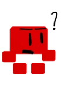
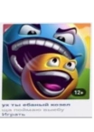
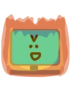
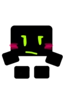
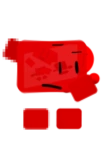
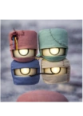

Шаблоны
Не готово[]
|  | "Так стоп мне кажется или чего-то тут не хватает?" эта страница ещё не готова но вы можете помочь её доработать!
|
Важная информация[]

|
"хей я схватил вас чтобы дать вам важную информацию! эта страница имеет важную информацию поэтому советую вам эту важную информацию почитать!
|
Для страниц с матами без цензуры и для материшников[]

|
"бляяяяяяяяяяяяяяяяяяяяяяяяяяяяяяяяя... эта страница может иметь нецензурные выражения!
|
|  | "ух ты чёртовый козёл щас поймаю!" этот персонаж козел!
|
для страниц с большой памятью[]
|  | "УРА Я НАКОНЕЦ-ТО ГОРЮ!!! БЕГИТЕ!!!" ЕСЛИ У ВАС МАЛО ПАМЯТИ ОСТАЛОСЬ... БЕГИТЕ С ЭТОЙ СТРАНИЦЫ ТАК КАК НА НЕЙ ОЧЕНЬ МНОГО МЕДИА ФАЙЛОВ И МОЖЕТ ЗАНИМАТЬ ОЧЕНЬ МНОГО МЕГАБАЙТОВ
|
Для персонажей женского пола[]
|  | Ну да я женщина а что? Шаблоны - женщина!
|
для персонажей цифровых копий[]
|  | АААÆĂà ЧŢØ ÇÖ MĤŒЙ¿!¿¡ этот персонаж является цифровой копией оригинального персонажа!
|
для персонажей которых запретил редактировать его же создатель[]

|
АААААА ПРОСТИ Я БОЛЬШЕ НЕ БУДУ АААААААААА Шаблоны запрещено редактировать его же создателем без его разрешения!
|
Для вещей которые были созданы с помощью ИИ[]
|  | ИИдеальо! этот шедевр искусства был создан с помощью ИИ!
|


{kind=link}
{kind=link}
{kind=link}
{kind=link}
{kind=link}
{kind=link}